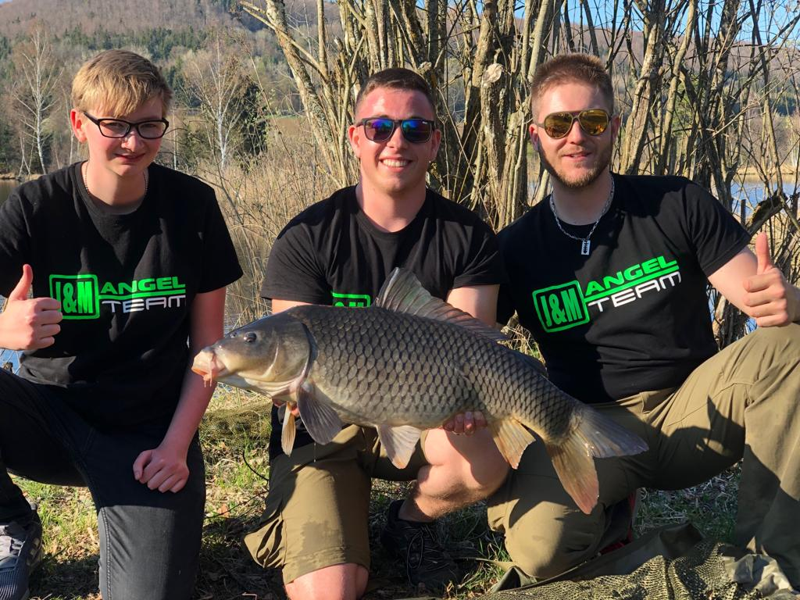
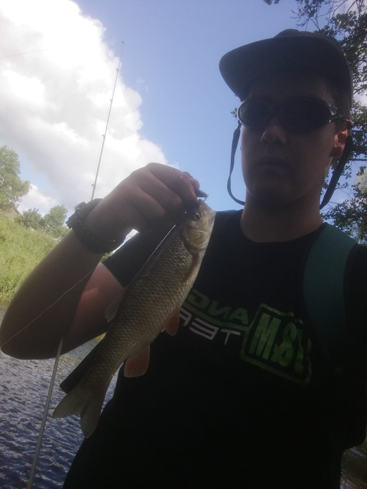
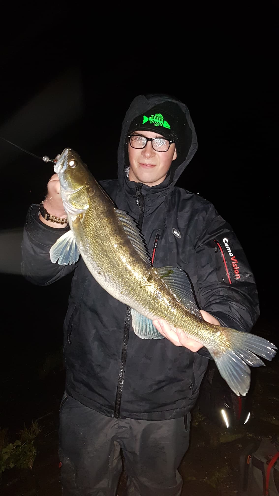
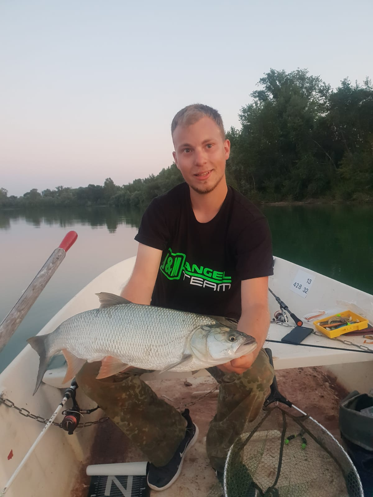
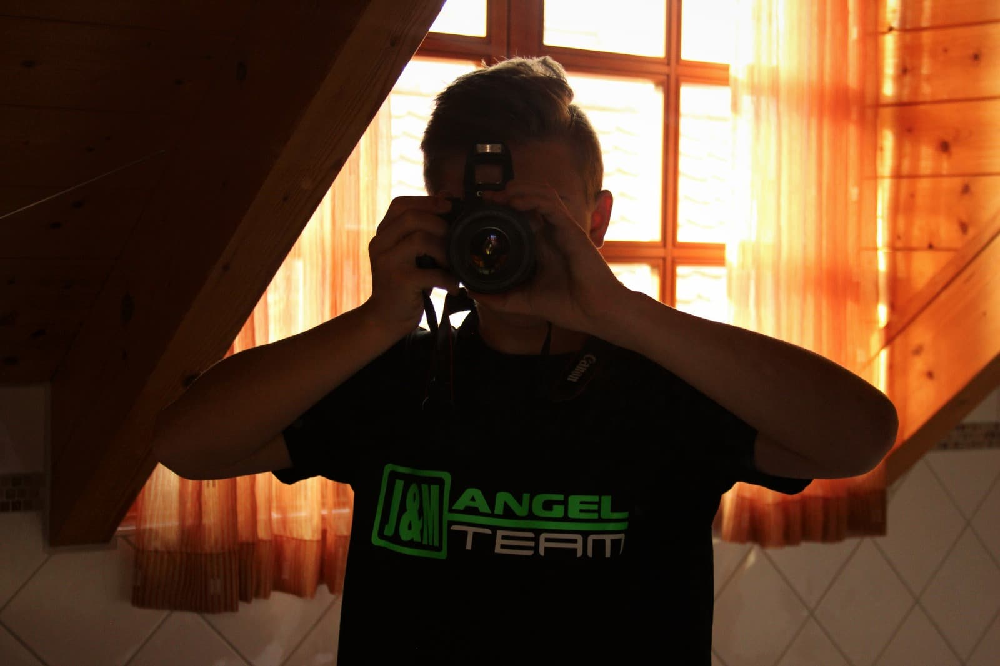
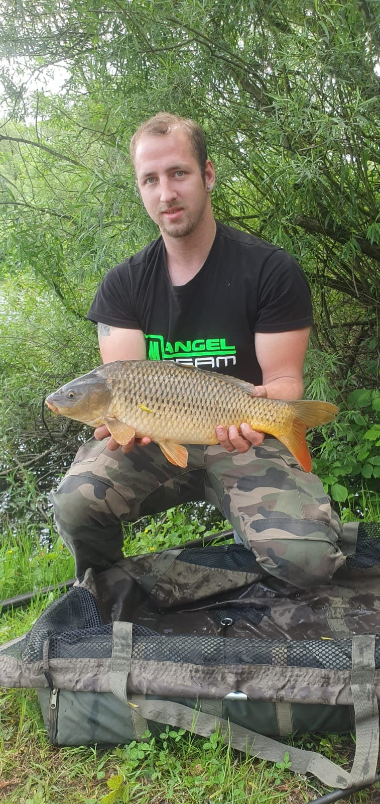
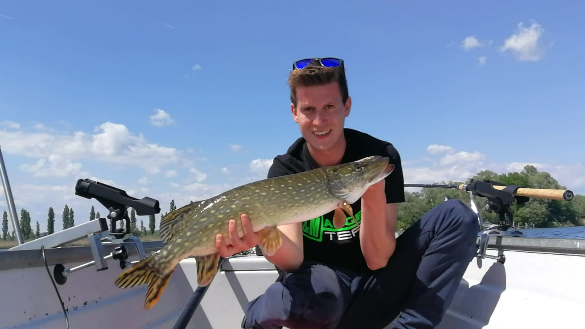
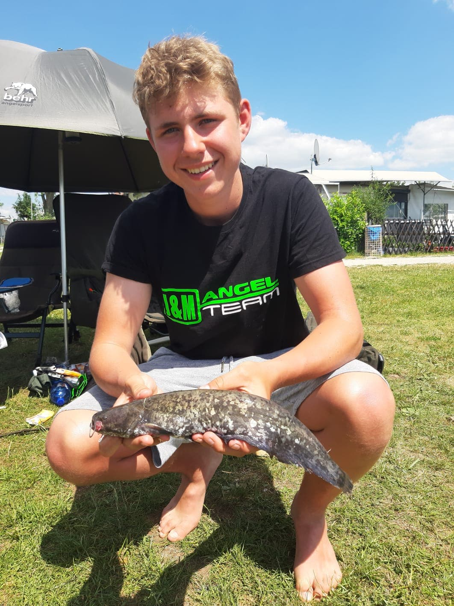

Anne Heimlich

Steckbrief
- Alter 20 Jahre
- Beruf Erzieher in Ausbildung
- Lieblingsgewässer Kleinere Seen
- Lieblingsfisch Schleie, Rotfeder, Karpfen
- Größter Fang Döbel, 52cm; Rotfeder, 39cm
- Tollster Fang Meine erste Forelle, welche ich mit der Unterstützung von Jonas von J&M Angeln und Benedikt von bt fishing, fangen durfte
Über mich
Ich angel seit ich 6 bin. Durch Lifestylefishing,
ein Projekt das ich seit 2013 betreibe, habe ich die Jungs von J&M angeln
kennengelernt. Ich bin Allrounder, habe also auch beim
Karpfenangeln immer eine Spinnrute mit im Gepäck.
Benedikt Lang

Steckbrief
- Alter 17 Jahre
- Beruf Schüler
- Lieblingsgewässer Donauoberlauf + Zuflüsse
- Lieblingsfisch Bachforelle, Döbel, Barben und Karpfen
- Größter Fang ???
- Tollster Fang Bachforelle, 47cm; Barbe, 87cm
Über mich
David

Steckbrief
Über mich
David

Steckbrief
Über mich
Felix Hübner

Steckbrief
- Alter 18 Jahre
- Beruf Werkzeugmechaniker
- Lieblingsgewässer Baggersee, Verkrauteter Waldsee
- Lieblingsfisch Waller, Karpfen
- Größter Fang Waller, 181cm
- Tollster Fang Koikarpfen
Über mich
2011 habe ich mit dem Angeln angefangen, damals nur mit dem Schwimmer
auf Rotfedern. Es dauerte nicht lang, da fing bei mir das Karpfenfieber an.
Ab dem Jahr 2012 habe ich mir eine Art Imperium an Karpfentackle aufgebaut
und vieles davon in den heimischen Seen versenkt (wer kennt‘s nicht). 2016
begeisterte mich das Wallerfischen, bei dem ich recht schnell sehr gute Fänge
in deutschen Gewässern verzeichnen konnte. Ich hoffe euch mit Artikeln und
Bildern unterhalten zu können!
Manuel Heller

Steckbrief
- Alter 19 Jahre
- Beruf Maschinenführer
- Lieblingsgewässer Fluss, Baggersee, alte Naturseen
- Lieblingsfisch Karpfen
Über mich
Hallo mein Name ist Manuel. Ich bin 19 Jahre alt und komme aus Bayern. Bereits mit
2 Jahren hat mich mein Vater mit zum Fischen genommen. Mit 12 Jahren habe ich die
Fischerprüfung absolviert und fische seit dem gezielt auf Karpfen.
Jojo

Steckbrief
Über mich
Jörg

Steckbrief
Über mich
Robin

Steckbrief
Über mich
Jonas Schuster

Steckbrief
- Alter 16 Jahre
- Beruf Schüler
- Region Baden-Württemberg
- Lieblingsgewässer Natursee/Baggersee
- Lieblingsfisch Karpfen, 10kg; Wels, 120cm; Schleie, 4kg
- Größter Fang Spiegelkarpfen, 18kg; Wels, 140cm
- Tollster FangEs gibt keinen Tollsten Fang. Fische sind schöne Tiere, egal in welcher Größe.
Über mich
Ich habe mit 8 Jahren angefangen zu angeln mit meinem Vater und habe mit 10
meinen Jugendschein bekommen und bin direkt in den ASV Blumberg eingetreten.
Mit 14 habe ich direkt meinen Angelschein gemacht. Neben dem Angeln spiele
ich Handball in Blumberg.